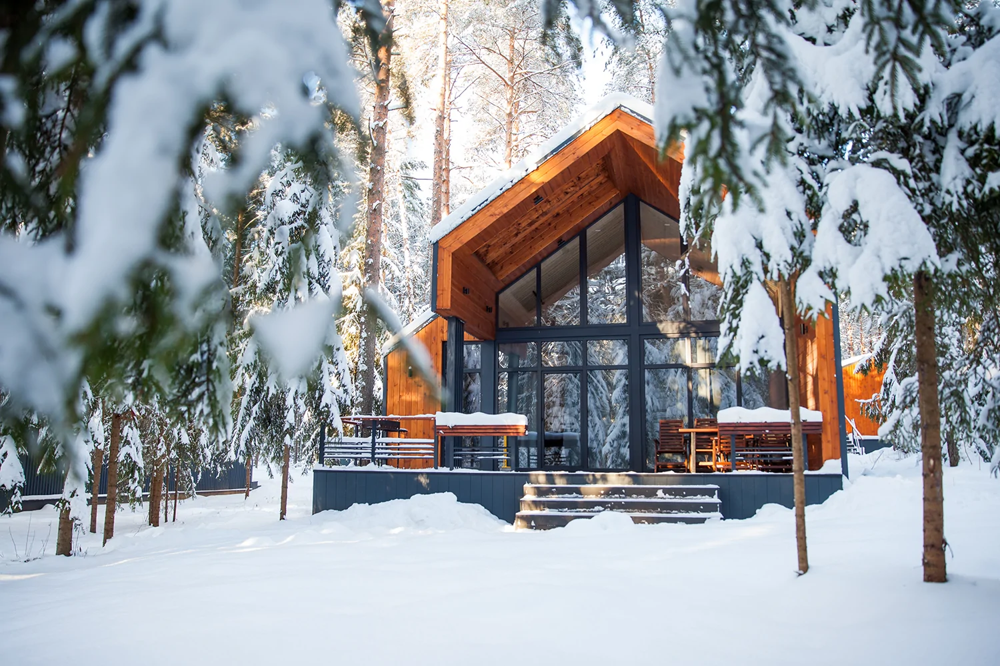
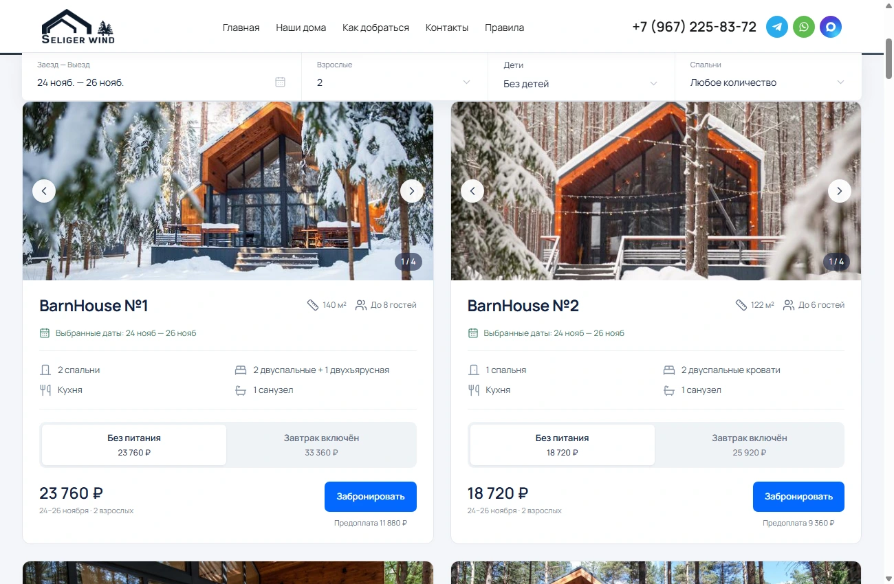
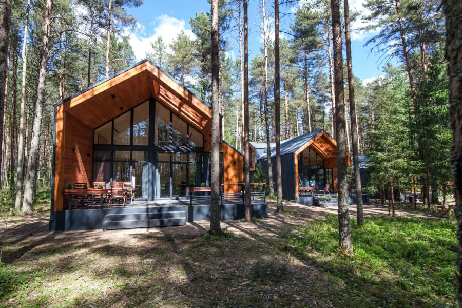
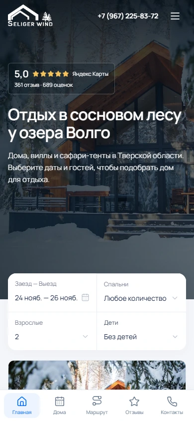

Фото и видео
Реальные зимние фотографии на первом экране, три видео с переключением и полноэкранным просмотром.
Помогают представить отдых ещё до поездки.
Обновили сайт так, чтобы гостю было проще разобраться в предложении, сравнить дома и связаться с администратором.
Что изменилосьГлавная ведёт от знакомства с комплексом к подбору дома. Основные вопросы закрываются на одной странице.
Ожидаемый эффект: меньше лишних действий между интересом к отдыху и выбором подходящего варианта.
Даты заезда и выезда объединены. Рядом — взрослые, дети и количество спален. На компьютере параметры остаются под рукой при просмотре домов.
Гостю проще сузить выбор и вернуться к параметрам, не начиная поиск заново.

Собрали рядом фотографии, площадь, вместимость, спальни, типы кроватей, кухню и санузел. Питание переключается прямо в карточке.
Дома легче сравнить. Меньше уточняющих вопросов об устройстве дома и составе предложения.

То, что важно семье или компании при выборе жилья.
На телефоне сайт перестроен под небольшой экран: крупные действия, доступная навигация и отдельные панели контактов и маршрута.
Телефон администратора и каналы связи собраны в нижней панели.
Адрес, карта и переход к построению маршрута через Яндекс Карты.
При открытии параметров страница подводит их к верхней части экрана.
Меньше затруднений на телефоне — особенно при выборе дат, просмотре фото и попытке позвонить.

Реальные зимние фотографии на первом экране, три видео с переключением и полноэкранным просмотром.
Помогают представить отдых ещё до поездки.Сохранены расположение объектов и детали территории. Дом или объект можно выбрать на карте.
Помогает понять, где находится дом и что рядом.Отдельные блоки с фотографиями и информацией об услугах, детской площадке и отдыхе с животными.
Помогают оценить, подходит ли комплекс под состав гостей.Отзывы, частые вопросы и контакты поддерживают выбор, а предложения помощи появляются в подходящих местах страницы.
Рейтинг, количество отзывов, тематические вкладки и слайдер. Полный отзыв доступен по нажатию.
Обращение к администратору рядом с информацией о комплексе, отдыхе компанией и ответами на вопросы.
Полный адрес, карта и ответы на частые вопросы помогают подготовиться к поездке и снять сомнения.
1,38 МБ → 133 КБ. Подготовлена отдельная версия для небольших экранов.
42,96 МБ → 34,01 МБ. Сохранены разрешение Full HD и звуковая дорожка.
CLS = 0 в проверке загрузки. Элементы страницы не меняли своё положение при появлении контента.
Это результаты проверки файлов и контрольной загрузки, а не обещание одинаковой скорости на всех устройствах. Эффект для пользователя — меньше передаваемых данных и более предсказуемое поведение страницы.
Улучшения направлены на более понятный выбор и более короткий путь к обращению.
Параметры подбора, понятные карточки и удобное сравнение.
Устройство домов, услуги, правила поездки, адрес и FAQ на странице.
Контекстные предложения помощи и доступный телефон администратора.
Крупные элементы управления, галереи, контакты и маршрут.
Рост обращений нужно подтвердить аналитикой после запуска.
Сравниваем долю целевых действий до и после изменений отдельно для телефона и компьютера, с учётом источников трафика и сезонности. Подключение актуальных цен и наличия из Bnovo и настройка событий аналитики — следующий этап.